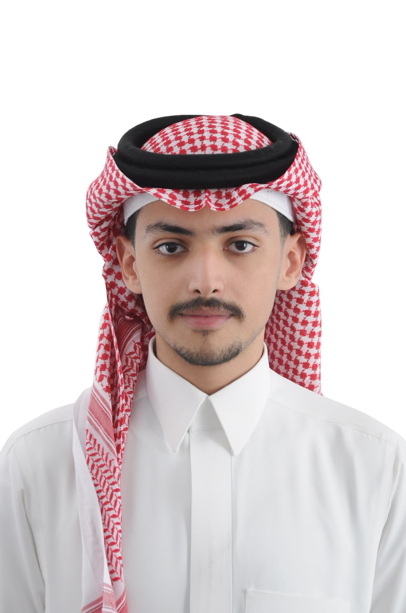

I am an IT student at King Abdulaziz University with a focus on network infrastructure and cybersecurity. I combine technical knowledge with analytical thinking to design, manage, and secure reliable network systems.
Education
Bachelor of Information Technology
King Abdulaziz University
Specialization: Networks & Cybersecurity Track
Currently in the final semester, focused on advanced network architecture, security protocols, and completing a comprehensive graduation project.
Technical & Professional Skills
- Network Design & Administration: Experienced in designing and managing LAN/WAN topologies, subnetting, and configuring routers and switches using Cisco IOS.
- Cybersecurity Fundamentals: Knowledgeable in firewall configuration, VPN setup, intrusion detection systems (IDS), and applying security best practices to protect network infrastructure.
- Network Protocols: Strong understanding of core protocols including TCP/IP, DNS, DHCP, HTTP/S, OSPF, and BGP.
- Network Simulation & Tools: Proficient with Cisco Packet Tracer and Wireshark for network simulation, traffic analysis, and troubleshooting.
- English Proficiency: Fluent professional communication and technical documentation.
Projects
Campus Network Design: Designed a scalable multi-floor network topology for a university building using Cisco Packet Tracer, including VLAN segmentation, DHCP configuration, and inter-VLAN routing.
View My Coursework